This chapter uses data from Hopkins Forest data taken from here: https://dasl.datadescription.com/datafile/hopkins-forest/ (couldn’t find it in the book’s data folder)
Key column: Avg.Wind..mph.
library(readr)
forest <- read_delim("data/hopkins-forest.txt", "\t", escape_double = FALSE, trim_ws = TRUE)## Parsed with column specification:
## cols(
## .default = col_double(),
## Date = col_character()
## )## See spec(...) for full column specifications.forest.df <- data.frame(forest)
summary(forest.df)## Date Year Month Day
## Length:365 Min. :2011 Min. : 1.000 Min. : 1.00
## Class :character 1st Qu.:2011 1st Qu.: 4.000 1st Qu.: 8.00
## Mode :character Median :2011 Median : 7.000 Median :16.00
## Mean :2011 Mean : 6.526 Mean :15.72
## 3rd Qu.:2011 3rd Qu.:10.000 3rd Qu.:23.00
## Max. :2011 Max. :12.000 Max. :31.00
## Day.of.Year Avg.Temp..C. Max.Temp..C. Min.Temp..C.
## Min. : 1 Min. :-21.270 Min. :-14.99 Min. :-28.400
## 1st Qu.: 92 1st Qu.: 0.350 1st Qu.: 4.88 1st Qu.: -4.400
## Median :183 Median : 9.780 Median : 15.40 Median : 3.660
## Mean :183 Mean : 8.277 Mean : 14.11 Mean : 3.079
## 3rd Qu.:274 3rd Qu.: 17.520 3rd Qu.: 23.63 3rd Qu.: 11.830
## Max. :365 Max. : 27.570 Max. : 34.12 Max. : 19.610
## Avg.Temp..F. Max.Temp..F. Min.Temp..F. Avg.Rel.Hum....
## Min. :-6.29 Min. : 5.02 Min. :-19.12 Min. :39.46
## 1st Qu.:32.64 1st Qu.:40.78 1st Qu.: 24.08 1st Qu.:69.11
## Median :49.60 Median :59.72 Median : 38.59 Median :77.30
## Mean :46.90 Mean :57.40 Mean : 37.54 Mean :76.07
## 3rd Qu.:63.53 3rd Qu.:74.53 3rd Qu.: 53.29 3rd Qu.:84.35
## Max. :81.62 Max. :93.42 Max. : 67.30 Max. :98.21
## Max.Rel.Hum.... Min.Rel.Hum.... Avg.Sol.Rad..w.m.2. Max.Sol.Rad..w.m.2.
## Min. : 57.70 Min. :15.46 Min. : 3.08 Min. : 19.0
## 1st Qu.: 91.10 1st Qu.:38.92 1st Qu.: 56.16 1st Qu.: 437.0
## Median : 95.20 Median :48.49 Median :114.99 Median : 690.0
## Mean : 92.79 Mean :50.82 Mean :138.57 Mean : 679.1
## 3rd Qu.: 96.20 3rd Qu.:62.50 3rd Qu.:212.47 3rd Qu.: 962.0
## Max. :100.00 Max. :96.20 Max. :355.93 Max. :1390.0
## Min.Sol.Rad..w.m.2. Total.Sol.Rad..w.m.2. Avg.Wind..mph. Max.Wind..mph.
## Min. :0 Min. : 441 Min. :0.000 Min. : 4.60
## 1st Qu.:0 1st Qu.: 7999 1st Qu.:0.460 1st Qu.:11.40
## Median :0 Median :16449 Median :1.120 Median :16.00
## Mean :0 Mean :19689 Mean :1.508 Mean :17.22
## 3rd Qu.:0 3rd Qu.:30184 3rd Qu.:2.280 3rd Qu.:21.48
## Max. :0 Max. :50898 Max. :6.730 Max. :40.55
## Min.Wind..mph. Avg.Barom..mb. Max.Barom..mb. Min.Barom..mb.
## Min. :0 Min. : 988.3 Min. : 993 Min. : 974
## 1st Qu.:0 1st Qu.:1006.1 1st Qu.:1009 1st Qu.:1002
## Median :0 Median :1009.8 Median :1013 Median :1007
## Mean :0 Mean :1010.0 Mean :1014 Mean :1006
## 3rd Qu.:0 3rd Qu.:1013.7 3rd Qu.:1017 3rd Qu.:1011
## Max. :0 Max. :1029.5 Max. :1032 Max. :1026
## Precip..in. Deep.Well..ft. Shallow.Well..ft. X80.cm.Soil..C.
## Min. :0.0000 Min. : 3.460 Min. :0.770 Min. : 2.67
## 1st Qu.:0.0000 1st Qu.: 3.970 1st Qu.:1.320 1st Qu.: 4.66
## Median :0.0000 Median : 5.030 Median :1.660 Median :10.20
## Mean :0.1681 Mean : 5.647 Mean :2.245 Mean :10.71
## 3rd Qu.:0.1700 3rd Qu.: 6.160 3rd Qu.:2.360 3rd Qu.:16.10
## Max. :4.9800 Max. :11.830 Max. :7.200 Max. :18.96
## X10.cm.Soil..C.
## Min. : 0.54
## 1st Qu.: 2.70
## Median :11.21
## Mean :10.76
## 3rd Qu.:18.18
## Max. :22.85Create a histogram of the Average wind speed (mph)
hist(forest.df$Avg.Wind..mph.)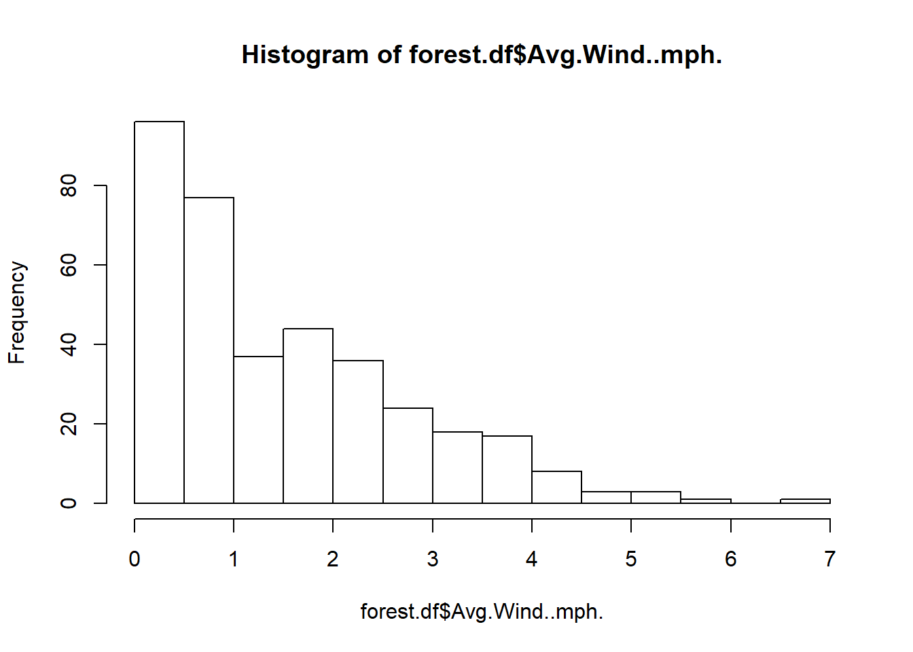
The 5-number summary is as follows:
summary(forest.df$Avg.Wind..mph.)## Min. 1st Qu. Median Mean 3rd Qu. Max.
## 0.000 0.460 1.120 1.508 2.280 6.730To divide the data between summer and winter, we can do the following:
# used this website: https://www.r-bloggers.com/5-ways-to-subset-a-data-frame-in-r/
# https://www.datanovia.com/en/lessons/subset-data-frame-rows-in-r/
# note used the "AND" logical operator
#library(dplyr) - don't need dplyr?
summer.df <- select(filter(forest.df, Month >=4 & Month <=9),c(Month,Avg.Wind..mph.,Date))
summary(summer.df)## Month Avg.Wind..mph. Date
## Min. :4.000 Min. :0.000 Length:183
## 1st Qu.:5.000 1st Qu.:0.350 Class :character
## Median :7.000 Median :0.710 Mode :character
## Mean :6.503 Mean :1.114
## 3rd Qu.:8.000 3rd Qu.:1.615
## Max. :9.000 Max. :5.470hist(summer.df$Avg.Wind..mph.)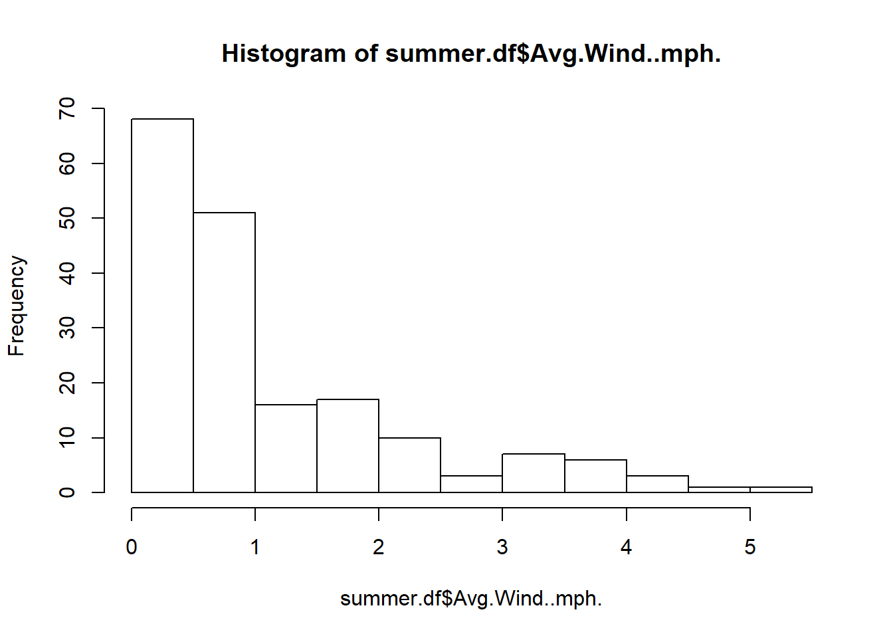
# used this website: https://www.r-bloggers.com/5-ways-to-subset-a-data-frame-in-r/
# note used the "OR" logical operator
library(dplyr)
winter.df <- select(filter(forest.df, Month <=3 | Month >=10),c(Month,Avg.Wind..mph.,Date))
summary(winter.df)## Month Avg.Wind..mph. Date
## Min. : 1.000 Min. :0.020 Length:182
## 1st Qu.: 2.000 1st Qu.:0.840 Class :character
## Median :10.000 Median :1.720 Mode :character
## Mean : 6.549 Mean :1.904
## 3rd Qu.:11.000 3rd Qu.:2.658
## Max. :12.000 Max. :6.730hist(winter.df$Avg.Wind..mph.)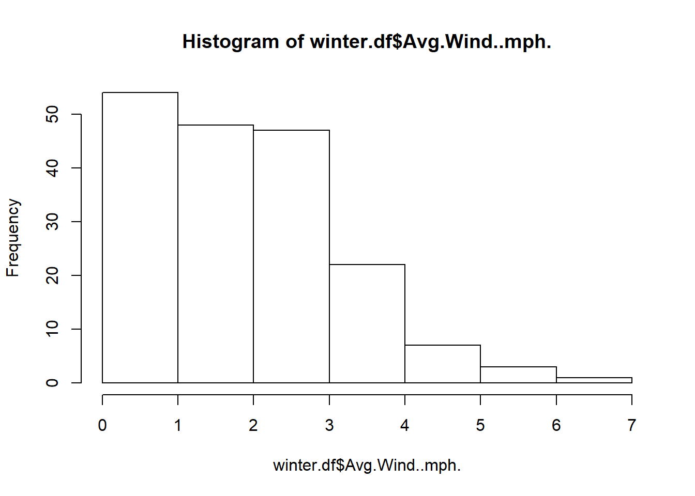
Now run a boxplot diagram with a boxplot for each month:
# use the tilde sign to signify which variable is to be used for grouping
boxplot(forest.df$Avg.Wind..mph ~ forest.df$Month)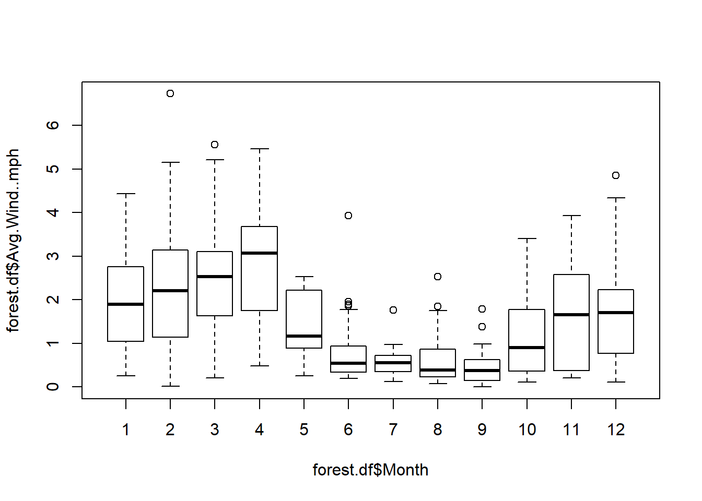
Identifying outliers is useful because they can be excpetions to a rule, show us something significant about the data OR identify issues with data quality itself - perhaps the data is wrong with a decimla place error or a units measurement error. Especially when dealing with different number formats e.g. US and Sweden, decimal points can often go awry if you don’t pay attention to data conversion.
You can choose to omit an outlier, but you should present the data both with and without the outlier, and explain your reasoning.
Timeplots are essentially a scattergraph with time along the x axis, sorted in order
Smoothing lines can be used to find the trend in the data.
Below is an example of smoothed timeplot in R. A simple algorithm for smoothing is to group “windows” of data and then take the average for that group and plot that as a data point for the smooth line.
There are different methods for smoothing e.g.
library(ggplot2)
ggplot(forest.df, aes(x = Day.of.Year, y = Avg.Wind..mph.)) + geom_point() + geom_smooth()## `geom_smooth()` using method = 'loess' and formula 'y ~ x'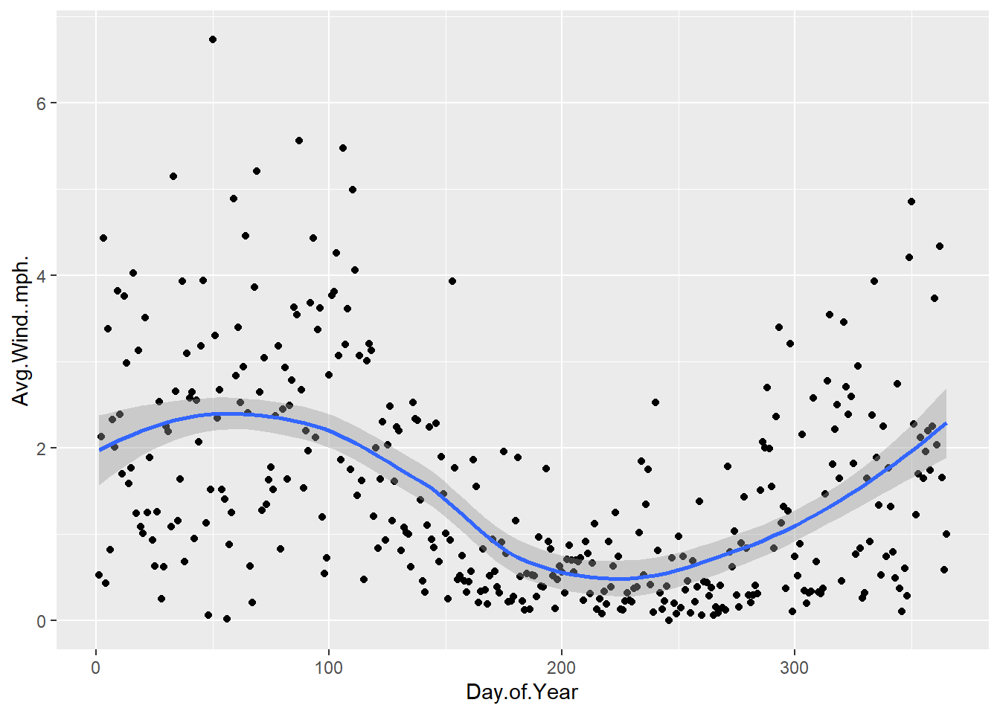
With trend lines, it can be tempting to make forecasts or the future, but for anything other than physics / biology / chemistry, this will normally be very difficult to go beyond generalisations.
When data is significantly skewed, it can be hard to say anything useful about the data.
One option is to Re-express or transform the data through using logarithms (or square root).
By applying a logarithm to data, you can normally make it more symmetrical. This may help give a better picture of the outliers. Note that if a data point is still an outlier AFTER applying logarithm then that is a serious outlier!
Applying a log to the Hopkins forest data.
logforest.df <- log10(forest.df$Avg.Wind..mph)
boxplot(logforest.df)## Warning in bplt(at[i], wid = width[i], stats = z$stats[, i], out =
## z$out[z$group == : Outlier (-Inf) in boxplot 1 is not drawn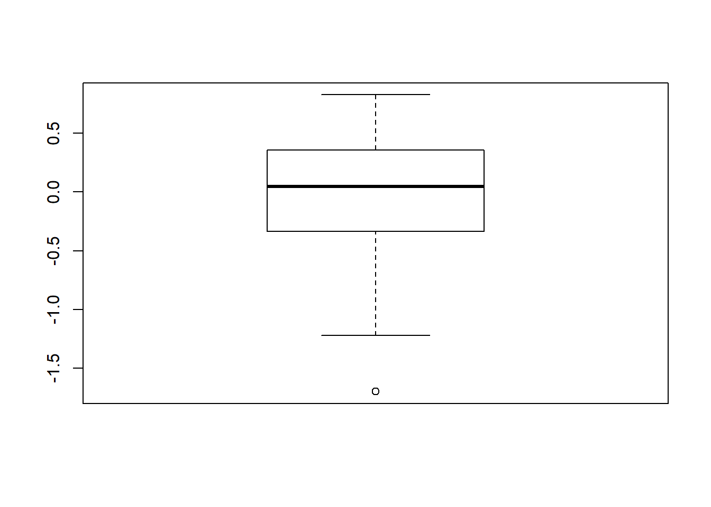
Run again without outliers:
boxplot(logforest.df,outline=FALSE)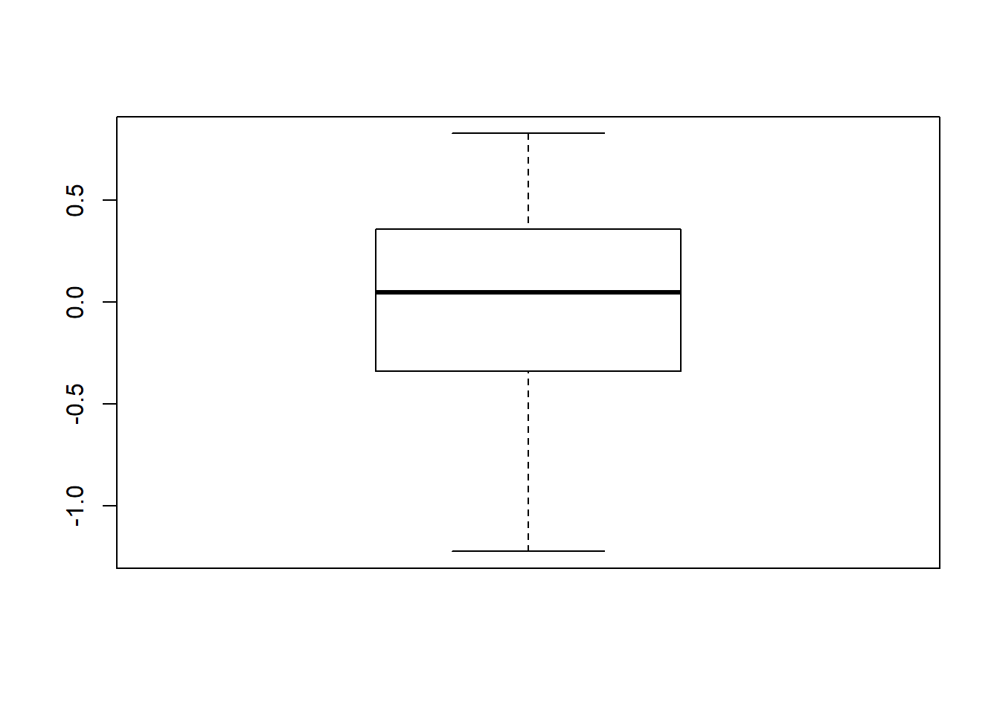
To be honest, not completely sure what I’m doing here…
The data is unimodal and positively skewed. Fördelningen är unimodal och snett fördelad åt höger.
There are some extremely slow times that make use of the Mean and Standard Deviation inappropriate in this situation, a better analysis would use the Media and IQR. The median is approximately 165 seconds and the IQR is approximately 18 (178 - 160)
As the data is heavily skewed to the right, I would describe this data using Median and IQR. The median number of camp sites per park is 43,5 and the IQR is 50 (78-28).
Boxplot (oversimplifed, there are actually data points over 78 and under 28)
camp.df <- data.frame(sites = c(0,28,43.5,78,275))
boxplot(camp.df)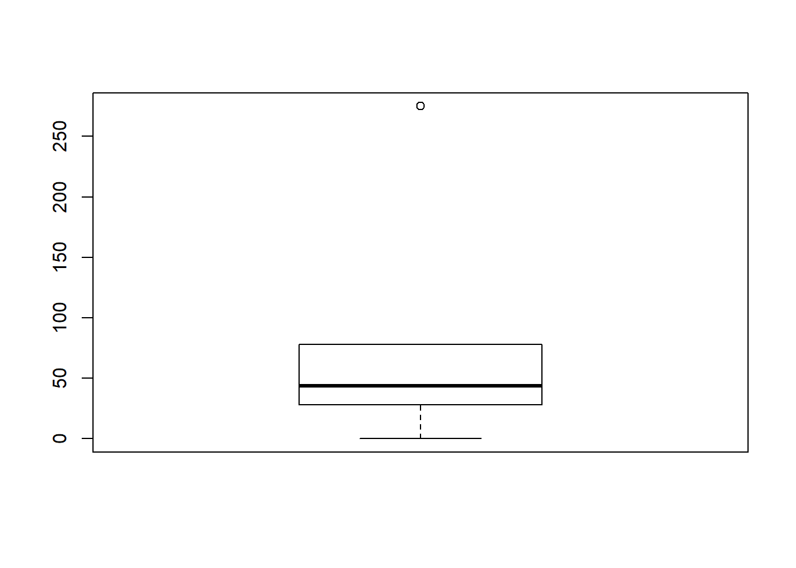
Class 1 is boxplot A since the only real difference between Boxplot A and B is the IQR, which is much larger for boxplot B, which would indicate a much flatter spread of data.
Class 2 is boxplot B
Class 3 is boxplot C since the data is skewed left, reflected in the inbalanced IQR and the higher median value.
library(readxl)
Ch04_Mugs <- read_excel("data/Ch04_Mugs.xls")To begin with, the data will be analysed using a histogram:
hist(Ch04_Mugs$Difference)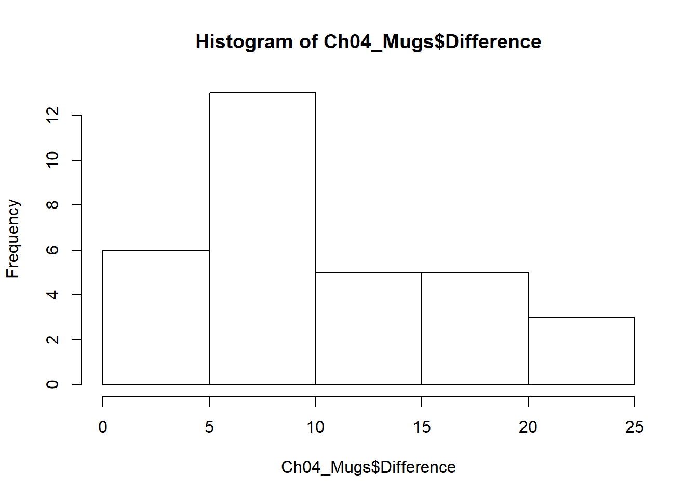
Then the five-number summary will be computed:
summary(Ch04_Mugs)## Difference Container
## Min. : 0.000 Length:32
## 1st Qu.: 6.000 Class :character
## Median : 8.000 Mode :character
## Mean : 9.812
## 3rd Qu.:13.625
## Max. :24.500The data is skewed to the right, with a median value of 8 degrees Farenheit and an IQR of 13.625 - 6 = 7.6 degrees.
Using a boxplot, we can identify if there are any outliers:
boxplot(Ch04_Mugs$Difference)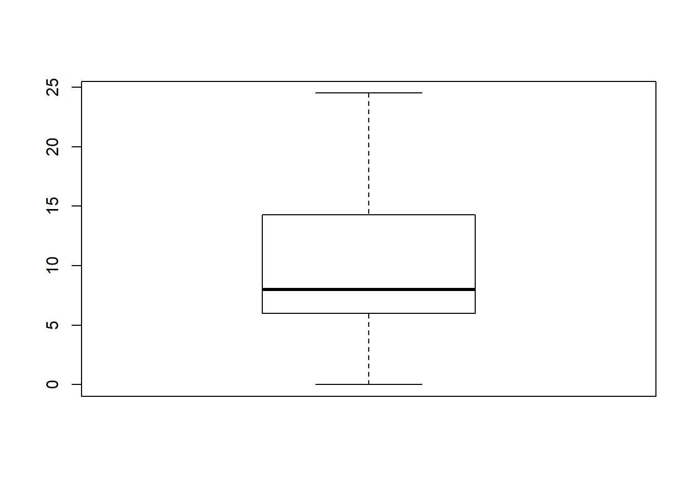
There are no outliers, but there are a large number of data points that are greater than the median. To help understand what may be causing this, we can make a new boxplot, this time grouped by the cup type.
boxplot(Ch04_Mugs$Difference ~ Ch04_Mugs$Container)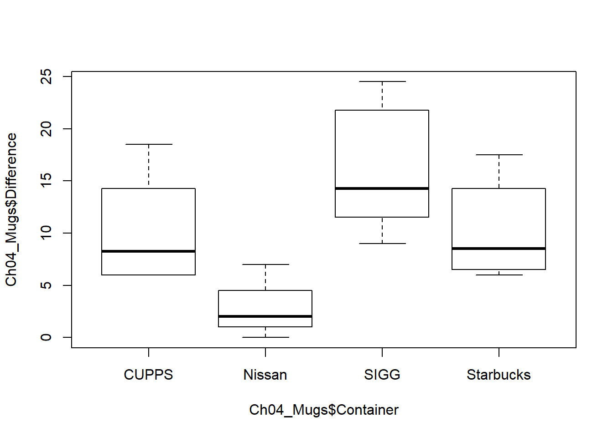
Now we can clearly see that the Nissan cups perform the best (the smallest temperature difference) while SIGG perform the worst. Looking at the Q3 line for Nissan we can see that this is below the minimum temperature difference recorded for all the other cups.